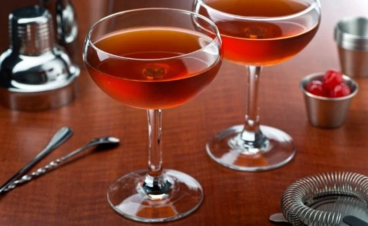

-
Caipirinha Morango
Segundo aponta o historiador Luís da Câmara Cascudo, a caipirinha foi criada por fazendeiros latifundiários na região de Piracicaba, no Estado de São Paulo, durante o século XIX, como um drinque local para festas e eventos de alto padrão, sendo um reflexo da forte cultura canavieira na região.
A caipirinha, em seus primeiros dias, era vista como um substituto local de boa qualidade ao uísque e ao vinho importados, sendo, a bebida, servida frequentemente em coquetéis de alta classe de fazendeiros, vendas de gado e eventos de grande notoriedade. Dessa origem de alta classe, a caipirinha logo passou para o gosto popular devido ao baixo preço de seus ingredientes, popularizando-se por todo o estado e se tornando a bebida-símbolo de São Paulo no século XIX. No início do século XX, na década de 1930, já era possível encontrá-la em outros estados, especialmente no Rio de Janeiro e Minas Gerais. -
Caipirinha Limao
Segundo aponta o historiador Luís da Câmara Cascudo, a caipirinha foi criada por fazendeiros latifundiários na região de Piracicaba, no Estado de São Paulo, durante o século XIX, como um drinque local para festas e eventos de alto padrão, sendo um reflexo da forte cultura canavieira na região.
A caipirinha, em seus primeiros dias, era vista como um substituto local de boa qualidade ao uísque e ao vinho importados, sendo, a bebida, servida frequentemente em coquetéis de alta classe de fazendeiros, vendas de gado e eventos de grande notoriedade. Dessa origem de alta classe, a caipirinha logo passou para o gosto popular devido ao baixo preço de seus ingredientes, popularizando-se por todo o estado e se tornando a bebida-símbolo de São Paulo no século XIX. No início do século XX, na década de 1930, já era possível encontrá-la em outros estados, especialmente no Rio de Janeiro e Minas Gerais. -
Caipirinha Maracuja
Segundo aponta o historiador Luís da Câmara Cascudo, a caipirinha foi criada por fazendeiros latifundiários na região de Piracicaba, no Estado de São Paulo, durante o século XIX, como um drinque local para festas e eventos de alto padrão, sendo um reflexo da forte cultura canavieira na região.
A caipirinha, em seus primeiros dias, era vista como um substituto local de boa qualidade ao uísque e ao vinho importados, sendo, a bebida, servida frequentemente em coquetéis de alta classe de fazendeiros, vendas de gado e eventos de grande notoriedade. Dessa origem de alta classe, a caipirinha logo passou para o gosto popular devido ao baixo preço de seus ingredientes, popularizando-se por todo o estado e se tornando a bebida-símbolo de São Paulo no século XIX. No início do século XX, na década de 1930, já era possível encontrá-la em outros estados, especialmente no Rio de Janeiro e Minas Gerais. -
Aperol Spritz

Aperol Spritz, também chamado de Spritz Veneziano ou simplesmente Spritz, é um coquetel criado na Itália à base de prosecco (espumante italiano), Aperol e água com gás (soda water ou acqua di seltz ou acqua di soda).
É um coquetel muito popular nos meses de verão na Itália e é normalmente tomado no horário do happy hour. Devido à sua enorme popularidade, em algumas localidades o happy hour foi apelidado de “spritz hour”. -
Negroni

Nasceu em 1919, na cidade italiana de Florença, quando o barman italiano Fosco Scarselli do Casoni Bar, respondeu à demanda de um cliente por uma bebida mais forte do que o Americano, coquetel mais doce que combina Campari.
O cliente era o icônico conde Camillo Negroni, e sabe-se lá em que circunstâncias de homenagem ou apropriação cedeu seu nome à mistura, que em pouco tempo passou a ser chamada de “o drinque do conde Negroni” e logo então “o drinque Negroni”. -
Manhattan
Manhattan foi criado por volta de 1870, no Manhattan Club, em Nova York, numa festa que a mãe de Winston Churchill ofereceu a Samuel J. Tilden.
Mas independente das lendas a cerca de sua criação, o drink se popularizou e se tornou um clássico para quem gosta de uma boa bebida. -
Piña Colada
Popular como uma das bebidas mais clássicas do mundo do coquetel, a Piña Colada é certamente uma das maiores e mais verdadeiras alusões ao Glamour e ao Refinamento da Vida Noturna.
Oriunda de San Juan, Porto Rico, a Piña Colada Drink Receita Original foi criada pelo barman Ramon “Monchito” Marrero em 1954.